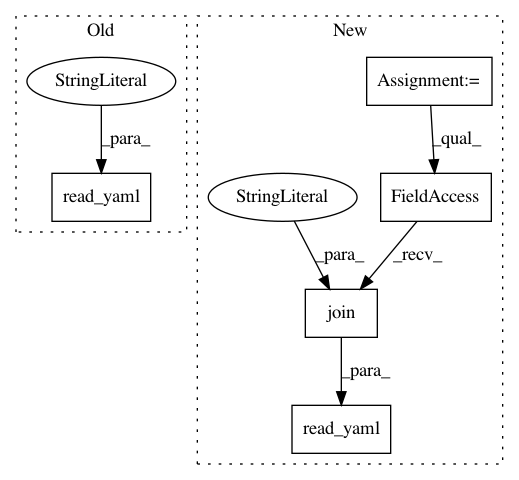

5c856f29d1347f8ea6d3f41924b1b06d35d4124e,python/tests/test_read_files.py,,test_read_yaml_strict,#,51
Before Change
def test_read_yaml_strict():
pytest.importorskip("yaml")
with pytest.raises(FileNotFoundError):
read_yaml("test_data/not_there.yml", strict=True)
def test_read_config_json_dispatch():
file_name = "example.json"
with mock.patch("baseline.utils.read_json") as read_patch:
After Change
def test_read_yaml_strict():
pytest.importorskip("yaml")
with pytest.raises(FileNotFoundError):
read_yaml(os.path.join("not_there.yml"), strict=True)
def test_read_config_json_dispatch():
file_name = "example.json"
with mock.patch("baseline.utils.read_json") as read_patch:
In pattern: SUPERPATTERN
Frequency: 3
Non-data size: 5
Instances
Project Name: dpressel/mead-baseline
Commit Name: 5c856f29d1347f8ea6d3f41924b1b06d35d4124e
Time: 2018-09-12
Author: blester125@users.noreply.github.com
File Name: python/tests/test_read_files.py
Class Name:
Method Name: test_read_yaml_strict
Project Name: dpressel/mead-baseline
Commit Name: 5c856f29d1347f8ea6d3f41924b1b06d35d4124e
Time: 2018-09-12
Author: blester125@users.noreply.github.com
File Name: python/tests/test_read_files.py
Class Name:
Method Name: test_read_yaml
Project Name: dpressel/mead-baseline
Commit Name: 5c856f29d1347f8ea6d3f41924b1b06d35d4124e
Time: 2018-09-12
Author: blester125@users.noreply.github.com
File Name: python/tests/test_read_files.py
Class Name:
Method Name: test_read_yaml_default_value